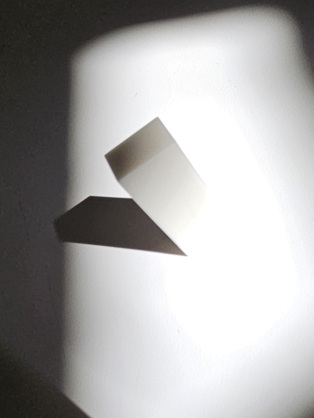
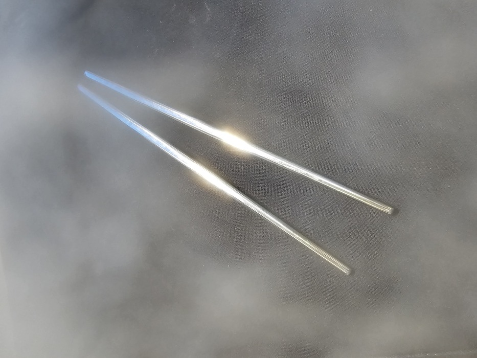
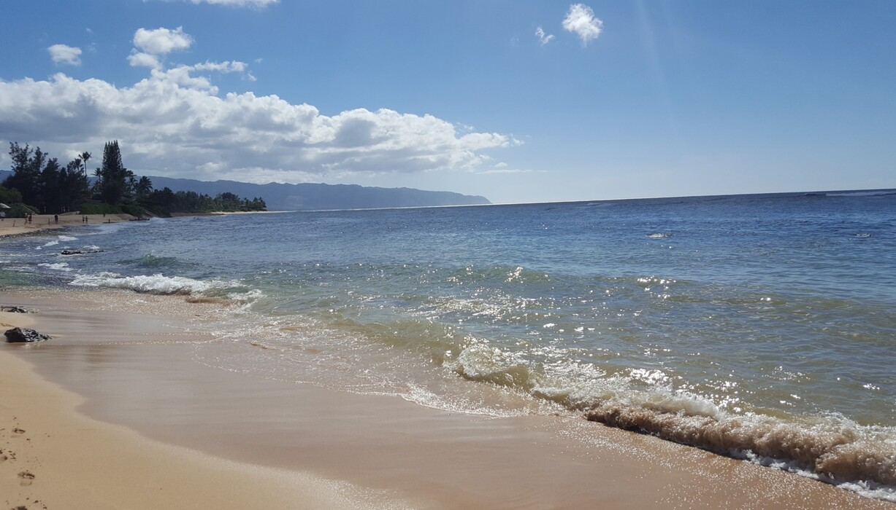
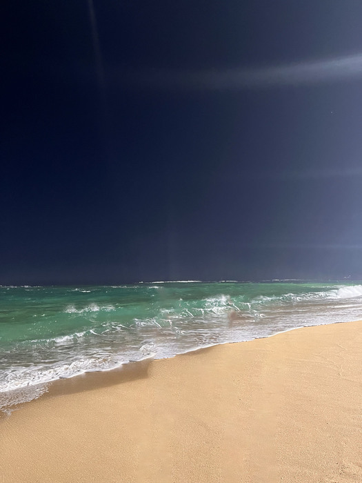

Black and White

This image was the first image I took for learning colors starting black and white concept.
Mist

This was my second photo, working with different light position and playing around with cotton between camera and chopsticks to express mist concept.
Day

An image of beach taken during daylight to learn different colors we see during the day.
Night

An image of beach taken during night to learn colors we see during night.